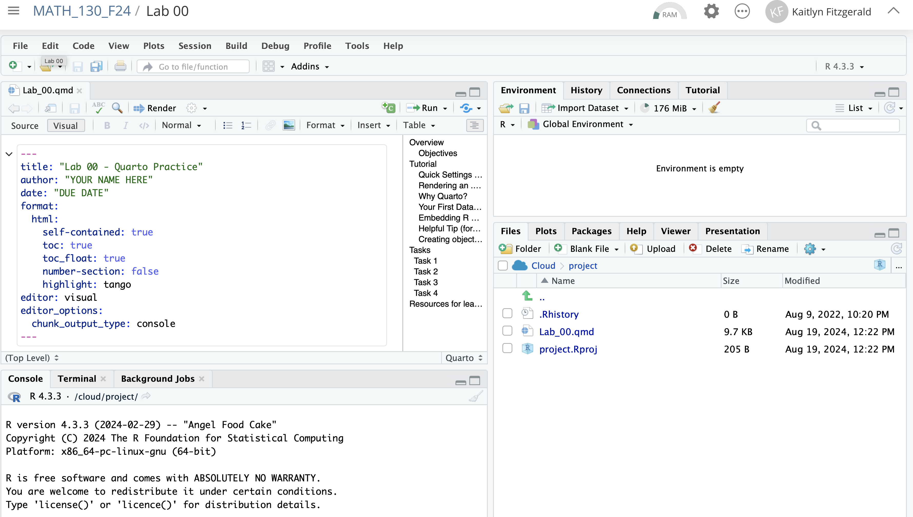

In this lab, you will begin to familiarize yourself with the statistical software we will be using this semester. The last Exercise on this lab gives instructions for how to turn in your completed lab on Canvas.
Before beginning this lab, make sure you have completed the steps on the “Posit Cloud - Getting Started” to sign up for a Posit Cloud account join our workspace for this course
Some lingo
R is the name of the statistical software / programming language you’ll be learning in MATH 130 this semester
RStudio is a convenient interface for using the R programming language.
Posit Cloud is the online version of RStudio that we’ll be using in MATH 130
Quarto is a type of document (with file extension .qmd) that is great for communicating results of a data analysis.
Learning Objectives
By the end of this lab, you will be able to:
Identify the main components of the RStudio Interface
Use Quarto to render an html document
Execute code in code chunks in an Quarto document
Create objects in R
Turn in your completed lab as a .html file
Getting Started
For each lab this semester, you will have a set of online instructions (the webpage you’re currently viewing is the Lab 00 instructions) that will walk you through a data analysis via a series of exercises to be completed in Posit Cloud.
Action required
To get started on Lab 00:
Log-in to Posit Cloud and navigate to the MATH_130_F24 workspace
Click “Start” on Lab 00
In the Files pane (lower right quadrant), click the file “Lab_00.qmd” to open it
The .qmd (Quarto document) should open in the source quadrant (upper left) and look something like the screenshot below:

The RStudio Interface is made up of four main quadrants:
Source: where you actually type your code / answers
Console: where the code & (non-visual) output will appear when you run the code
Environment: where you can see the “objects” or datasets you have to work with
Files: where you can open your .qmd file and export your .html file
Action required
When getting started in a Lab in Posit Cloud, you should always make two quick settings changes. Find the gear/sprocket icon next to the Render button (on the same line as the save, spellcheck, and search icons), then:
Click the gear/sprocket icon and then select Preview in Viewer Pane.
Click the gear/sprocket icon again and select Chunk Output in Console
Render: Quarto –> HTML
You will be completing your Lab in a Quarto document (.qmd). We can Render an .html document from this file. Note, HTML is what’s behind EVERYTHING you view on the internet. So, you’re basically about to create your first web page :)
Action required
Click the Render button above the top left pane in RStudio to generate an html version of your quarto document.
If you see a pop-up that indicates that packages need to be installed for the render to work, select the option to install the packages.
After the appropriate packages are installed the html file should appear in the Viewer pane on the right. Congratulations! You’ve rendered your first html file.
Why Quarto?
Organizing and communicating your work is an extremely important aspect of any science. In most cases that is the main objective of statistical work. We want to take data and use it to build understanding and insight into the world around us. RStudio makes the process of organizing and communicating work with data much easier by using Quarto.
How does Quarto make it easier?
Quarto allows us to render documents that include both written content and output from embedded R code. That is, we can do both computational work and writing about results in one document — this saves us from a lot of tedious work and errors! No more copying and pasting!
Note, there are two ways to view and edit a Quarto document: Source or Visual. You will likely feel most comfortable in the Visual mode, as it looks and feels much like a Microsoft Word or Google Docs text editor. However, switching to the Source mode allows you to view the underlying code and syntax that generates the desired formatting (e.g. bold, italics, headers, etc).
Your First Data Visualization
Below is code to produce your first data visualization. Don’t worry about the details of the code for now - we’ll learn that throughout the semester. For now, start by answering a few questions about what you see in the visualization.
You should type your answers to this exercise in your Lab_00.qmd document in Posit Cloud
What do you notice about the graph? What’s on the x- and y-axes? What do the colors represent? What patterns do you see?
What do you wonder? What questions does it raise?
Action required
After typing your answers to Exercise 1 in your Quarto document, click Render so that your answers appear in the .html document. The html document is what gets turned in and graded, so you must Render in order for your answers to be visible.
Copy the code above and paste it into the code chunk below Exercise 1 in your Quarto document.
Press the “Play” button on the top right corner of the code chunk to load the necessary packages & data, and to produce the graph on your own computer. The graph should pop up in the “Plots” tab of the lower right quadrant.
Check your “Environment” quadrant (top right). You should see two objects listed there now: gapminder (1704 rows & 6 columns) as well as gapminder_filtered (36 rows & 6 columns). These contain the data that produced the visualization.
Double click on a dataset in your Environment to view it as a spreadsheet in your Source quadrant.
Exercise 2
After viewing the data in spreadsheet form, comment on what’s contained in the gapminder and gapminder_filtered datasets. Try to explain how what’s in the gapminder_filtered dataset relates to the code that you copied and pasted.
Tweak the relevant code to add a 4th country to your visualization.
Click Render so that the updated visualization appears in your html.
Comment on what you observe in your updated visualization and any additional questions it makes you curious about.
Embedding R Code
You’ve now seen your first example of how to embed R code into an Quarto document. Embedded code is always placed in what’s called a “code chunk,” which appears as a grey box. The first line of the code chunk will also always include r inside a set of brackets to tell Quarto that the code you’ve written is in the R programming language. Quarto is multi-lingual and allows you to run code that’s written in other languages such as Python, Julia, SQL, etc., but we won’t be doing that in this course!
The html also includes the output from the code, immediately after the code itself.
Helpful Tip
Anytime you get an object not found or function not founderror, your first trouble-shooting step should be to click the “Fast Forward” button next to the Play button (green arrow in a code chunk), then click Play to re-run the desired code chunk. Often code in one chunk depends on code in a previous chunk, so the Fast Forward button quickly runs all code chunks above the current one. You do not need to hit the Fast Forward button every time before the Play button, it should just be your first troubleshooting step if you get an error.
Creating objects in R
“Objects” are the term for where values are saved in R. We assign values to objects using the “assignment operator” <-. For example, we can assign the value 9 to the object x with the code x <- 9. You can think of the assignment operator as an arrow pointing left; it takes the value on the right, and saves it into the object on the left.
Action required
Scroll to the relevant “Creating Objects in R” section in your .qmd, and run the following code chunk by clicking the green arrow on the right hand side of the code chunk.
x <-9
Check the “Environment” pane (the top-right pane in your RStudio window), and you should see that it now includes the object x. This means that R now knows what x is, and you can use x to perform other operations. Run the code chunk below and examine the output.
Play around with other operations you can perform with x (e.g. division, subtraction, etc.)
x*2
[1] 18
Exercise 3
In the code chunk for Exercise 3 in your .qmd,
write a line of code that multiplies x by your favorite number
write a line of code that creates an object y and assigns it the value 437. Hint: see the code chunk above for how we created the object y
write a line of code that calculate x*y. Make sure the correct answer (3933) appears in your html when you Render.
Exercise 4
Let’s make some adjustments to the meta-data (called the YAML) at the top of the .qmd document:
Add “MATH 130 - Introduction to Statistics” as a subtitle. Hint subtitle: goes right below title:.
Change the author to your name.
Change the date to the due date.
Render the document to observe how these changes appear in the .html.
Exercise 5
Once Exercises 1-4 have been completed, Render the document one last time. Look over the .html document (in the Viewer pane) to make sure that everything is visible and formatted as you intended.
To submit this lab assignment, you need to export your .html document from Posit Cloud and then upload it to the Lab 00 assignment on Canvas.
To export the file,
Navigate to the Files pane in Posit Cloud (bottom right quadrant, to the left of the Viewer tab)
Select the box next to the appropriate file name in the Files quadrant
Click “More” (blue gear icon), and then “Export”
The file will export to the downloads file on your computer. To submit on Canvas, follow these steps:
In the MATH 130 Canvas site, navigate to Lab 00 under Assignments
Click “Start Assignment”
Click “Upload File”
Click “Choose File”
In the pop-up window, navigate to your Downloads folder and select “Lab_00.html”